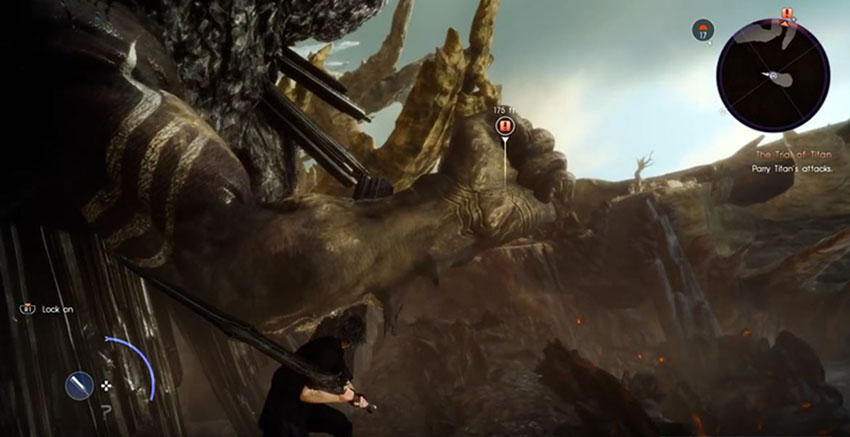
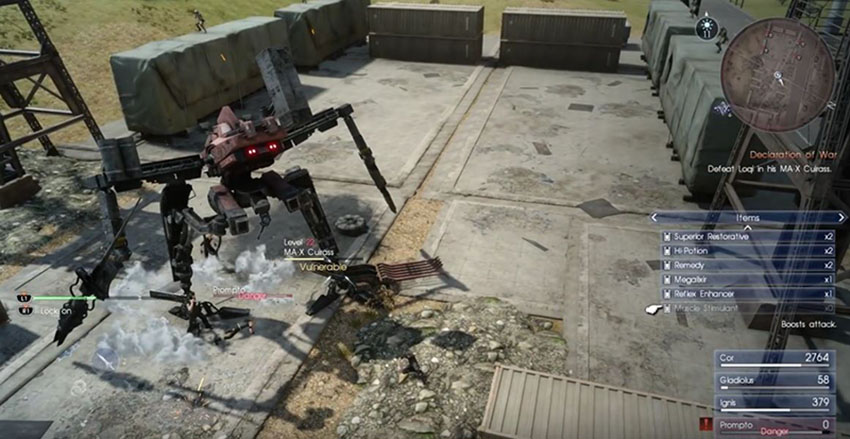

Was the decade long release worth it?
Author: Phat Le
Date: April 3, 2017
Genre: MMORPG
Final Fantasy 15, it took nearly two decades before finally being release globally. Initially developed as Final Fantasy 13- Versus, the game had many changes over the years until finally rebranded as Final Fantasy 15. Having waited for many years after the initial teaser of back in 2006, I had the pleasure of spending countless hours exlporing the vast world, doing hunting quests and even spends hours on end fishing. The game is an open world RPG, with many hidden story elements to find. The story was very compelling and gameplay was extremely fluid and polished; however, the main charater Noctis and his friends felt kind of bland.
Lets first talk about the gameplay.The fighting mechanic feels very dynamic and fluid, changing weapons during fights from longsword to greatsword to guns and spears. The fighting style is kind of button mashing, but there are times where you are required to strategically plan out your movements and attacks to avoid death. You fight along side with you three friends and have special link moves with them. You will also meet other temporary members to help during the story.The big downside to the gameplay is the weak summoning system. You spend the entire game collecting these gods to aid you into battle, but the requirments to summon them is very specific. Overall, the gameplay and combat is fun and enjoyable.
Now lets talk about the story. Final Fantasy 15 main game does not cover the prologue of the story. To understand the backstory, there is a movie called Final Fantasy King's Glaves which is required to watch. Then theres the side characters, Ignis, Gladiolus and Prompto. We have zero background knowledge of these bestfriends of yours. The only hint is shown in the short anime series released months prior to the game release. Now after watching the movies and anime, the bulk of the story comes from the loading screen. The worse part about this is that we are missing some important bits of the story! Near the end of the game, the story was poorly told. They rushed many scenes and some scenes were teased but complelety skipped after. At one moment someone on your side fights for you, the next loading screen there was a huge battle and your allies are dead. Ignoring the obvious flaws, the story in theory is excellent, but the execution on SquareEnix's part was terrible.
Overall how was the game?? I felt amazing, the graphics was great, the gameplay was fun and at some parts, the story has some really good scene that made it special. The game has been in development for over a decade so we should of expected a perfect game with a flawless ending. Our standards for the game was too high from the wait, but in general, the game was great. I loved many aspects of the game; I clocked in over 100 hours of the game excluding the future expensions planned to be release.
MY RATING: 7/8 the was great.